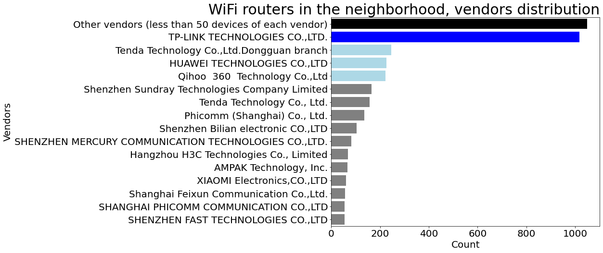

A unique dataset was created by logging real life WiFi APs broadcast in a certain area. Used Python code to generate insights from the data, plot WiFi APs on the map, do quantitative analysis of the hardware (including vendor distribution analysis, by cross-linking with another dataset). The code is available on my github.
Preview:
Applied research project as a part of the MA thesis: machine learning model for Mandarin Chinese tones pronunciation evaluation for second language learners.
Github https://github.com/placebeyondtheclouds/masters-thesis-code
Preview:
Interactive report on the dataset for the thesis project.
It takes some time to get the dynos up and running, so there is a delay about half a minute between requesting the link and before the page loads.
Preview, version 1:
Online webapp, version 2